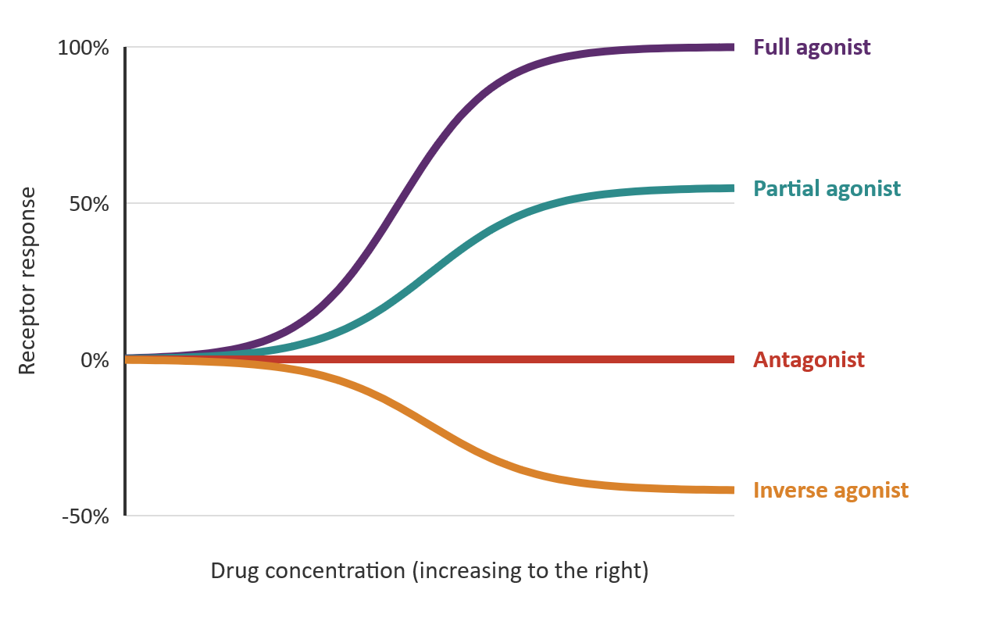
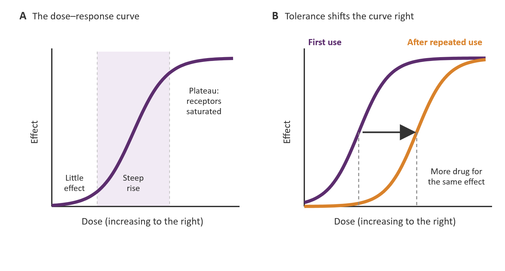
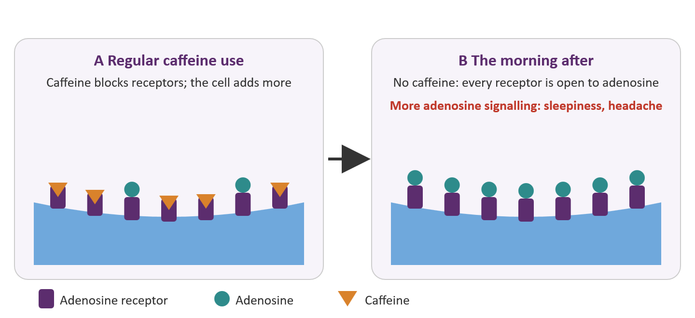
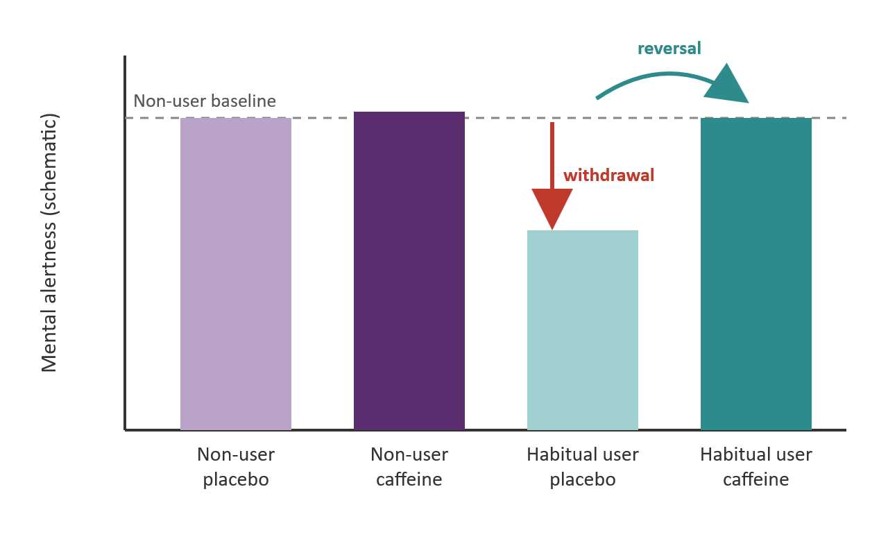
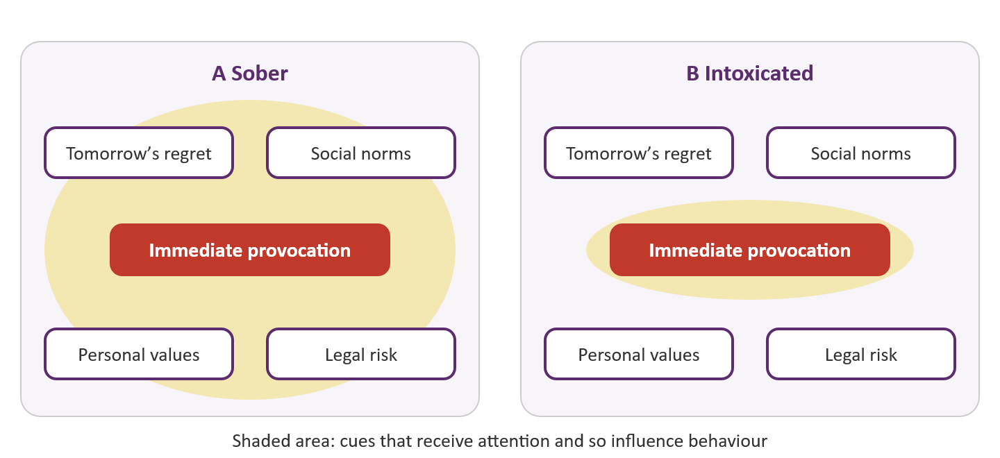
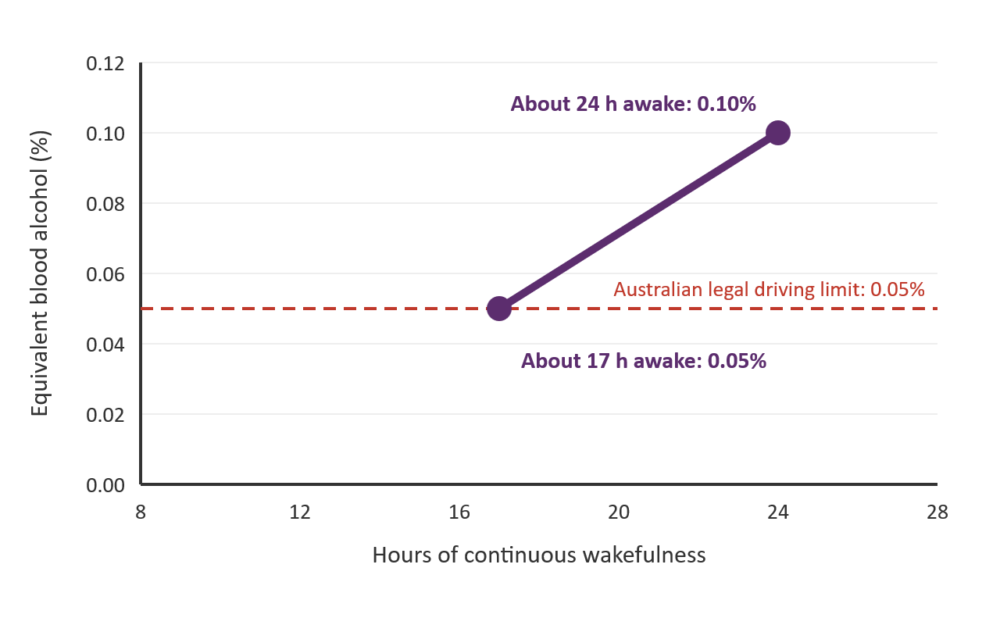

Chapter 12
Drugs, Disorders and the Cognitive Brain
Where this chapter sits
Every chapter so far has described a cognitive system working normally, and has used its failures (the amnesic patient, the neglect patient, even the biased judge) mainly as windows onto how it functions. This chapter turns the question around. What happens to attention, memory and decision-making when the chemistry that runs them is deliberately changed, by a cup of coffee, a few drinks or a prescription stimulant, or when the tissue itself begins to degrade?
Three threads carry straight over from earlier chapters. The ego-depletion replication in §11.8 was built on a methylphenidate study, which makes it the obvious place to start asking what stimulants actually do for a healthy brain. Load theory from Chapter 2 gives the cleanest way to understand what alcohol does to attention. And the ventromedial patients in §11.6, whose choices changed while their intellect did not, return here in a wider form: Parkinson's disease, Alzheimer's disease and traumatic brain injury each damage cognition in a recognisably different pattern.
Drug research is unusually prone to two confounds, and you will meet both repeatedly. The first is withdrawal reversal: a regular user tested after a night without the drug is not a neutral baseline, so a drug that merely restores normal function can look like an enhancer. The second is selection: people who use a drug heavily differ from those who do not in many ways besides the drug, so a difference between the groups is not yet an effect of the drug. Keep both in mind every time a study claims that a substance makes people sharper or duller.
Learning objectives
12.1 How drugs change cognition
Almost every drug that changes how you think does so by changing how neurons communicate. A neuron releases a transmitter into the synapse, the transmitter binds to receptors on the receiving cell, and the signal ends when the transmitter is broken down or pumped back into the releasing terminal by transporter proteins. Each of those steps is a point at which a drug can intervene (Barron, 2023; Lim, 2021).
Pharmacologists classify drugs by what they do at the receptor (Figure 12.1). An agonist binds to a receptor and activates it, as nicotine does at nicotinic acetylcholine receptors. A partial agonist binds to the same site but cannot drive the receptor to its full response, however much is given. An antagonist binds without activating, so it does nothing on its own but stops the natural transmitter from acting; caffeine is an antagonist at adenosine receptors. A positive allosteric modulator binds to a different site and amplifies the response to whatever transmitter is already present, which is how benzodiazepines strengthen the inhibitory effect of GABA (Lim, 2021). Other drugs act before the receptor is reached. Cocaine and methylphenidate block the transporters that clear dopamine and noradrenaline from the synapse, so the transmitter lingers and acts for longer; amphetamine also blocks reuptake and, in addition, pushes extra transmitter out of the terminal.

The relation between dose and effect is usually S-shaped: little happens at very low doses, the effect climbs steeply over a middle range, and it levels off once the receptors are saturated (Figure 12.2A). Two features of that curve matter for everything that follows. First, the curve moves. Repeated exposure produces tolerance, a rightward shift in which more drug is needed for the same effect (Figure 12.2B), either because the liver clears the drug faster (metabolic tolerance) or because the target cells become less responsive to it (functional tolerance) (Lim, 2021). Second, when the body has adapted to a drug's continued presence, removing the drug leaves the adaptation unopposed. That is withdrawal, and its symptoms tend to be the mirror image of the drug's effects: a sedative's withdrawal includes agitation, and caffeine's includes the sluggishness and headache that many people know from a morning without coffee (Lim, 2021).

Most drugs that matter for cognition act on a handful of neuromodulatory and transmitter systems: dopamine and noradrenaline (stimulants), acetylcholine (nicotine, and donepezil, which slows the breakdown of acetylcholine and is used in Alzheimer's disease), adenosine (caffeine), GABA (alcohol, benzodiazepines and many general anaesthetics), glutamate (alcohol again, and ketamine), serotonin (the classic psychedelics) and the endocannabinoid system (cannabis). Two cautions apply. Few drugs are clean. Alcohol acts on GABA receptors, glutamate receptors, potassium channels and serotonin receptors at once, and pharmacologists call drugs with many targets “dirty” (Lim, 2021). Nor do the systems map one-to-one onto functions. Dopamine is not “the reward chemical” and acetylcholine is not “the memory chemical”; each modulates many circuits, and what a drug does to behaviour depends on which circuits it reaches and what state they were in to begin with.
That last point leads to the central idea of the chapter: more is not better. Cools and D'Esposito (2011) review evidence that dopamine's effects on working memory and cognitive control follow an inverted U (Figure 12.3). Too little dopamine signalling in prefrontal circuits impairs the working-memory system described in Chapter 3, but so does too much, so performance is best at an intermediate level. Because people differ in where they start on the curve, the same dose can move one person up towards the peak and carry another past it. Studies of healthy volunteers find exactly this kind of baseline dependence: people with low working-memory capacity, who on this account start below the optimum, tend to benefit from a dopamine-enhancing drug, whereas those with high capacity gain little or are impaired (Cools & D'Esposito, 2011).

The optimum is also not the same for every function. The dopamine level that best supports holding information steady in working memory is not necessarily the level that best supports updating it or switching flexibly between rules, so a single dose can improve one task and impair another in the same person (Cools & D'Esposito, 2011). The inverted U accounts for much of the apparent inconsistency in the drug literature. If a study averages over participants who start on both sides of the peak, a drug can help half the sample, harm the other half and appear to do nothing at all. Keep it in mind in §12.4, where it offers one reason why stimulants do so little, on average, for healthy students, and in §12.8, where it explains why the same dopamine medication can both help and hinder a person with Parkinson's disease.
12.2 Everyday drugs: caffeine and nicotine
Caffeine is the most widely consumed psychoactive substance in the world, and the obvious test case for the withdrawal problem. It works by blocking adenosine receptors. Adenosine builds up in the brain during waking and promotes sleepiness; by occupying its receptors without activating them, caffeine holds that signal off (Lim, 2021).
The catch is that the brain adapts. Regular exposure to an antagonist leads cells to make more adenosine receptors, which partly compensates for the blockade (Figure 12.4). When caffeine is withdrawn, that enlarged population of receptors is exposed to normal levels of adenosine, and the result is the familiar picture of withdrawal: tiredness, poorer concentration and headache (Lim, 2021). By the time a regular coffee drinker wakes up, they are already several hours into this state.

This is why two respected reviews of the same literature reach opposite conclusions. Smith (2002) concludes that the amounts most people consume have largely positive effects on behaviour, with benefits clearest when alertness is low. James and Rogers (2005) argue that in properly controlled studies these apparent benefits for habitual consumers are almost wholly the reversal of mild withdrawal after a short period of abstinence. Set side by side, the two reviews show that the disagreement is about the baseline rather than the data. Both camps accept that a cup of coffee makes a deprived regular drinker sharper; they disagree about whom that drinker should be compared with.
Rogers et al. (2013) made the comparison directly. Non-consumers and low consumers were tested alongside medium-to-high consumers, all after overnight abstinence, and each received caffeine or placebo. In the regular consumers, withdrawal brought greater sleepiness, lower mental alertness and poorer performance on simple and choice reaction time and recognition memory tasks by the afternoon, and caffeine restored these measures. In the non-consumers and low consumers, caffeine did little for mental alertness or performance apart from reducing sleepiness, because it also raised anxiety and jitteriness enough to offset that benefit. What caffeine did do in both groups was speed up tapping and reaction times. The authors' title summarises the result: faster, but not smarter (Figure 12.5).

None of this makes caffeine useless. The motor speeding is genuine, and when alertness is low for reasons other than withdrawal, as after a night of lost sleep (§12.7), caffeine has real work to do (Smith, 2002). The point is narrower. For a habitual user, much of what the morning coffee delivers is a return to where a non-user starts the day.
Nicotine supplies the contrast. It is an agonist at nicotinic acetylcholine receptors, which are excitatory and widely distributed, and it acts as a stimulant (Lim, 2021). Cholinergic projections from the basal forebrain modulate the attentional systems described in Chapter 2, so an effect on attention is plausible. Smokers present exactly the same interpretive problem as coffee drinkers, however, because a smoker tested after a few hours without a cigarette is in withdrawal. Heishman et al. (2010) dealt with this by restricting their meta-analysis to non-smokers and minimally deprived smokers. They found small-to-moderate improvements in fine motor performance, alerting and orienting attention, short-term episodic memory and working-memory speed, and argued that these are genuine enhancements because withdrawal relief had been excluded by design. The design is the lesson: the caffeine question can be, and has been, settled the same way.
A genuine enhancement is not an argument for use. The effects are small, and nicotine is among the most addictive substances people use, in part because inhaled nicotine reaches the brain within seconds and because the cues that accompany smoking, such as finishing a meal or waking up, become triggers for craving in their own right (Barron, 2023; Lim, 2021). Vaping has given a new generation a new route of administration. One widely reported statistic is that teenagers who use e-cigarettes are more than three times as likely to go on to smoke cigarettes as those who do not (Lim, 2021). By now you should be able to say what that association does and does not show.
12.3 Alcohol
Alcohol is the drug most students know best, and the one whose effects on cognition are easiest to misread. Ethanol is a small molecule that passes easily through cell membranes and is the “dirty” drug of §12.1, acting at all the targets listed there, with an overall depressant effect on neurons (Lim, 2021). The effects change with dose. At low concentrations alcohol lifts mood, reduces anxiety and increases risk taking while slowing reflexes and impairing judgement; at high concentrations it produces memory loss and unconsciousness and can kill by suppressing breathing (Lim, 2021).
The most useful psychological account of what alcohol does to behaviour is the alcohol myopia account of Steele and Josephs (1990). It holds that alcohol narrows attention to the most salient cues in the immediate situation, so that behaviour is driven by what is in front of the drinker rather than by more distant considerations (Figure 12.6). A sober person who is jostled at a bar weighs the provocation against a set of quieter, more abstract cues: how this will look tomorrow, what the people around them expect, what kind of person they want to be. Those inhibiting cues take attention and effort to keep in mind, and they are the first to fall away when capacity shrinks.
The account makes a prediction that sounds paradoxical: alcohol has no fixed emotional effect. Whether a drink makes someone more aggressive, more anxious or calmer depends on where their attention is directed at the time. An intoxicated person left alone with a worry has nothing to distract them from it and can become more anxious than they would be sober, whereas one absorbed in a game or a conversation may feel calmer, because the worry has dropped out of the narrowed window altogether (Steele & Josephs, 1990). The drug does not add a new behaviour; it changes which cues get to control behaviour.

This makes alcohol a direct application of the capacity ideas in Chapter 2. In the terms of load theory, alcohol acts rather like a heavy load on the limited capacity available for attentional control: with less control available, processing is captured by whatever is most salient, and weaker cues that would normally restrain behaviour lose their grip. It also links to §11.6. The ventromedial patients there made poor choices because the emotional signals that normally guide decisions were lost; the intoxicated drinker has the signals but cannot hold them in view. One practical implication follows from the account. If an inhibiting cue can be made salient at the moment of decision, the narrowed attention of an intoxicated person may be captured by it.
Alcohol's effect on memory has its own signature. White (2003) concludes that alcohol primarily interferes with the formation of new long-term memories, while leaving intact both previously established memories and the ability to keep new information active for a short time. That combination explains the alcohol-related blackout. A person can hold a conversation, find their way home or drive a car (Please, don’t!), because short-term maintenance is working, yet later have no record of what happened, because the information was never transferred into long-term storage. Blackouts may be fragmentary, with islands of memory that can sometimes be cued, or en bloc, with nothing retrievable at all; they are most likely when blood alcohol rises quickly, and they are far more common among ordinary social drinkers, including university students, than was once assumed (White, 2003). In the language of Chapter 5, a blackout is an encoding failure, not a retrieval failure, and it is linked to disrupted activity in the hippocampus. It is a brief, pharmacological echo of the anterograde amnesia of the patients you met in Chapters 3 and 4.
What about the longer term? Heavy drinking has long been associated with brain atrophy, but whether moderate drinking matters is more contested. In brain scans from 36,678 middle-aged and older adults in the UK Biobank, Daviet and colleagues (2022) found that lower grey- and white-matter volume was already apparent at an average of one to two UK units a day (a UK unit is 8 g of ethanol, a little less than an Australian standard drink of 10 g), and that the association grew stronger as intake rose. The study adjusted for many potential confounds, but it is observational, and the selection warning applies: people who drink more differ from those who drink less in other ways. The safest reading is that there is no evidence here that moderate drinking protects the brain, and some evidence that it does not. Excessive alcohol use also appears on the list of modifiable risk factors for dementia discussed in §12.8 (Livingston et al., 2024).
12.4 “Smart drugs”: stimulants in healthy brains
Methylphenidate (Ritalin) and the amphetamines (dexamfetamine, lisdexamfetamine and mixed amphetamine salts) are prescribed for ADHD, and both classes raise the levels of dopamine and noradrenaline in the synapse, methylphenidate mainly by blocking reuptake and amphetamine also by promoting release (Barron, 2023). Modafinil, prescribed for narcolepsy and shift-work sleep disorder, is a wakefulness-promoting drug whose mechanism is less well understood. All three are also used without prescription by students who hope to study longer and better. In Australia methylphenidate and the amphetamines are Schedule 8 controlled drugs, so supplying or using them without a prescription is illegal, and it also means taking them without the dose checks and monitoring a prescriber would provide.
How common is the practice, and does it work? Smith and Farah (2011) found that estimates of non-medical use among students vary widely but together suggest that it is commonplace. Their review of the laboratory evidence concluded that the cognitive effects of stimulants in healthy people could not yet be characterised definitively: declarative memory was the most reliably improved, particularly when memory was tested after a long delay, while effects on working memory and cognitive control were less consistent. Ilieva et al. (2015) then quantified the literature across 48 studies. They found small effects on inhibitory control and short-term episodic memory, a working-memory effect that was significant under only one of their two analyses, and a medium effect on delayed episodic memory. These are real effects, but they are a long way from the “limitless” pill of student folklore.
Why is the average effect so small? The inverted U from §12.1 offers one explanation. Healthy, well-rested students are, by and large, already near their dopaminergic optimum, so they have little to gain and something to lose. A second explanation is that stimulants change motivation more than they change capacity. Tasks feel more interesting and effort feels cheaper, so people work harder, but working harder is not the same as working better.
A study from the University of Melbourne tested exactly this distinction (Bowman et al., 2023). Healthy adults took methylphenidate, dexamfetamine, modafinil or a placebo on separate occasions, at doses at the high end of those used clinically, and then solved a series of “knapsack” problems: choosing which items to pack, given their values and weights, so as to maximise the total value without exceeding a weight limit. The task was chosen because it captures the structure of many everyday problems, from planning a delivery route to deciding which assignments to prioritise. Compared with placebo, all three drugs increased effort: participants spent longer and made more moves. Yet the value they achieved went down, even though their chance of finding the best solution did not fall significantly. Effort went up and the quality of that effort went down.
The most striking result concerned individual differences. On the drugs, differences between participants shrank and even reversed: people who performed above average on placebo tended to end up below average, and vice versa, a change the authors attributed to more random, less systematic search strategies (Bowman et al., 2023). That is the pattern the inverted U would predict if the best performers started closest to their optimum. It also has an uncomfortable implication for the student who takes a friend's tablet before an exam: the people most likely to try such drugs in order to do even better may be the people with the most to lose.
The section connects back in two directions. In §11.8 you met the large multi-laboratory replication that failed to find ego depletion at all (Hagger et al., 2016). What that section did not mention is that its protocol came from a drug study: Sripada et al. (2014) had reported that methylphenidate prevented the ego-depletion effect. A drug effect is only as solid as the effect it is supposed to act on. In the other direction, the ADHD box in Chapter 10 describes why the same drugs are effective treatments for many people with ADHD. On the inverted-U account, that is not a contradiction. A person who starts well below the optimum has a great deal to gain from the same dose that pushes a healthy, rested student past the peak.
12.5 Cannabis
The main psychoactive ingredient of cannabis is delta-9-tetrahydrocannabinol, or THC. THC acts on receptors that the brain already uses for its own signalling molecules, the endocannabinoids. There are two main types: CB1 receptors, which are responsible for most of the psychoactive effects, and CB2 receptors, which are expressed mostly in the immune system (Lim, 2021). CB1 receptors are especially dense in the hippocampus and prefrontal cortex, which is one reason why memory is the cognitive function most consistently affected.
Acute effects come first. Curran and colleagues (2016) review evidence that intoxication impairs verbal learning and memory, attention and working memory, with the clearest effects on getting new information into memory, the same encoding stage that alcohol disrupts (§12.3; Chapter 5). They also stress that “cannabis” is not one drug. The plant contains many compounds, and the balance between THC and a second compound, cannabidiol, matters. Cannabidiol is not intoxicating and may offset some of THC's harmful effects, yet high-THC, low-cannabidiol varieties now dominate many markets and appear more harmful than lower-THC, higher-cannabidiol ones (Curran et al., 2016). A study that simply asks people how often they use cannabis cannot tell these apart.
The harder question is whether heavy use causes lasting decline, and it is the chapter's main exercise in separating association from cause. Meier and colleagues (2012) followed the Dunedin birth cohort of 1,037 New Zealanders from birth to age 38. Because IQ had been measured in childhood, before anyone had used cannabis, they could ask whether cognition changed, not just whether users scored lower. Persistent cannabis dependence was associated with neuropsychological decline across domains, most clearly in people who had begun using as adolescents, a pattern the authors interpreted as suggesting a neurotoxic effect of cannabis on the developing brain.
The same cohort was assessed again at 45 (Meier et al., 2022). Long-term users showed a mean IQ decline of 5.5 points from childhood to midlife, poorer learning and processing speed than their childhood IQ would predict, and more memory and attention problems as reported by people who knew them well. They also had smaller hippocampal volume, although the smaller volume did not statistically explain their cognitive deficits. Crucially, the more persistent the use, the greater the decline, and this dose–response relation survived adjustment for use of other substances, childhood socioeconomic status, low childhood self-control and a family history of substance dependence.
A different design gives a different answer. Jackson and colleagues (2016) studied two longitudinal samples of adolescent twins (789 and 2,277 participants), with IQ measured at ages 9 to 12, before any cannabis use, and again at 17 to 20. Users scored lower than non-users and showed a decline in crystallised intelligence, just as the Dunedin results would lead you to expect. But there was no dose–response relation between frequency of use and IQ change, and the twin who used cannabis did not decline more than the co-twin who did not. Because twins share their family environment and much or all of their genes, the authors concluded that familial factors, rather than cannabis itself, underlie the association between adolescent use and declining IQ. Curran and colleagues (2016) treat the causality and the permanence of such cognitive changes as still strongly contested.
Who is right? Both studies may be. The twin samples were adolescents with relatively short and mostly light histories of use, while the Dunedin long-term users had been dependent for decades. Familial factors could explain much of the association at modest levels of use while very heavy, very prolonged use still carries a cost of its own. The point for you is not to pick a side but to see what each design can rule out. The cohort design rules out the possibility that users simply started with lower IQ; it cannot rule out an unmeasured factor that causes both heavy use and decline. The co-twin design rules out anything twins share; it cannot rule out something that differs between twins, and its estimates become uncertain when few twin pairs differ sharply in use. No ethical study will ever randomly assign teenagers to years of heavy cannabis use, so the answer will always come from triangulating imperfect designs.
12.6 Psychedelics
The classic psychedelics include psilocybin, found in some mushrooms, and the synthetic compound lysergic acid diethylamide (LSD). Both are chemically similar to serotonin and act mainly as agonists at serotonin 2A (5-HT2A) receptors, which are dense in the association cortex. They can produce visual distortions, synaesthesia, an altered sense of self sometimes called ego dissolution, and a feeling of connection with nature or something larger than oneself (Lim, 2021). Their history has been turbulent. Adoption by the counterculture of the 1960s and 1970s, covert government-funded research and loosely regulated clinical studies gave the drugs a poor reputation and stalled research for decades, but since around 2010 there has been renewed interest in whether they can help with conditions such as depression, post-traumatic stress disorder and addiction (Lim, 2021).
Why should a single receptor type produce such sweeping changes in experience? One influential answer is the REBUS model of Carhart-Harris and Friston (2019), whose name stands for “relaxed beliefs under psychedelics”. It builds on the idea, which you met in Chapter 8, that perception is a negotiation between top-down expectations and bottom-up sensory evidence. In this framework the brain constantly predicts its input, and each prediction carries a weight, or precision, that determines how strongly it resists contrary evidence. REBUS proposes that psychedelics relax the precision of the brain's high-level prior beliefs, so that bottom-up information has more influence than usual. Perception becomes less constrained by expectation, which could explain the vivid distortions, and deeply held beliefs about the self and the world become, for a while, open to revision, which is the basis of the claimed therapeutic effect.
Recent imaging gives a glimpse of what this loosening might look like in the brain. J. S. Siegel and colleagues (2024) scanned healthy adults repeatedly before, during and for weeks after a high dose of psilocybin and, on a separate occasion, methylphenidate, which served as an active control that produces arousal without psychedelic effects. Psilocybin disrupted functional connectivity across the cortex and subcortex more than three times as much as methylphenidate, by desynchronising activity that is normally coordinated. The disruption was strongest in the default mode network, a set of regions associated with self-referential thought, and the size of each person's network change tracked the intensity of their subjective experience. Doing a simple perceptual task during the scan reduced the changes, and a reduction in connectivity between the anterior hippocampus and the default mode network persisted for weeks. These findings fit the idea of a temporarily less constrained brain, but they show what changes, not why it helps anyone.
Because public and clinical interest is running ahead of the evidence, this section carries the chapter's main caution about hype. From 1 July 2023, Australia's Therapeutic Goods Administration allowed specifically authorised psychiatrists to prescribe psilocybin for treatment-resistant depression and MDMA for post-traumatic stress disorder, making Australia one of the first countries to permit such prescribing outside clinical trials (Therapeutic Goods Administration, 2023). Yet at the time of that decision no psilocybin or MDMA product had been evaluated by the regulator for quality, safety and efficacy, and the trial evidence remains mixed. In a head-to-head trial in moderate-to-severe depression, psilocybin did not differ significantly from the antidepressant escitalopram on the primary outcome after six weeks, although several secondary measures favoured psilocybin (Carhart-Harris et al., 2021). REBUS is a theoretical model, and the therapeutic trials it is used to explain are still being evaluated.
The placebo problem is sharpest for microdosing, the practice of taking regular doses of a psychedelic too small to produce a trip, which many users believe improves their mood, focus and creativity. Szigeti and colleagues (2021) tested the claim with an ingenious self-blinding design. They recruited 191 people who were already microdosing and gave them online instructions for packing their own microdoses, and empty placebo capsules, into identical opaque capsules and envelopes marked with QR codes, so that participants did not know which they were taking in a given week but the researchers could later work it out. Participants reported improvements in well-being and cognition, but they improved on placebo too, and the authors concluded that the anecdotal benefits of microdosing can be explained by the placebo effect. The design is also a lesson in method: a citizen-science study can run a placebo-controlled trial cheaply, on people already using a drug, without supplying the drug at all (Genius move!).
MDMA, the drug in ecstasy, is often grouped with the psychedelics but works differently. It is an amphetamine derivative that is taken up through the transporters for serotonin, dopamine and noradrenaline and reverses their normal direction, so that they release these transmitters into the synapse, with an especially strong effect on serotonin (Schenk & Highgate, 2021). Users describe heightened closeness and empathy rather than visions. Its therapeutic case rests mainly on trials of MDMA-assisted psychotherapy for post-traumatic stress disorder. In August 2024, however, the United States Food and Drug Administration declined to approve that treatment and asked for a further trial, after concerns that included expectancy bias in participants who could tell whether they had received the drug (Lykos Therapeutics, 2024). Australia's regulator and the American regulator, looking at much the same evidence, reached different decisions, a reminder that approving a treatment is a judgement made under uncertainty, not a verdict delivered by the data.
12.7 Altered states without drugs: sleep loss and anaesthesia
Chapter 5 described what sleep does for memory consolidation. This section is about the other side of the coin: what losing sleep does to waking cognition. Lim and Dinges (2010) meta-analysed 70 studies of short-term total sleep deprivation and found the largest effects on simple attention, especially on lapses, the moments in a vigilance task when a person simply fails to respond. Effects on more complex attention and working memory were smaller, and the effect on the accuracy of reasoning was small and not statistically significant.
That ordering is the opposite of what most people expect. If you were asked which would suffer most after a night without sleep, a dull reaction-time task or a hard reasoning problem, you would probably pick the reasoning problem. One explanation is that monotonous tasks provide nothing to counteract mounting sleep pressure, so attention drifts and brief lapses, sometimes actual microsleeps, intrude. A complex, engaging task recruits effort and interest that can temporarily hold those lapses off (Lim & Dinges, 2010). The everyday tasks that rely most on sustained simple attention, such as driving on an empty highway at night or monitoring a screen, are precisely the ones in which a single lapse can be catastrophic.
Chronic restriction is more common than a full night's loss, and its costs accumulate. Van Dongen et al. (2003) restricted healthy adults to 4, 6 or 8 hours in bed per night for 14 nights, or kept them awake for 3 nights. Sleeping 4 or 6 hours a night produced steadily accumulating, dose-dependent deficits on every cognitive task, and by the end of the fortnight people sleeping 6 hours or less were as impaired as people who had gone without sleep for up to two nights. Their own ratings of sleepiness, by contrast, rose sharply at first and then changed little, so they were increasingly impaired without feeling much sleepier. Students who believe they have adapted to six hours a night during exam season should take note.
Two Australian studies put these effects into a currency that everyone understands. Dawson and Reid (1997) tested 40 adults on a hand–eye coordination tracking task, once while they stayed awake for 28 hours and once while they drank alcohol at regular intervals until their blood alcohol concentration reached 0.10%. By comparing the two curves, they could express fatigue as a blood-alcohol equivalent. After about 17 hours awake, performance had fallen to the level seen at 0.05%, the legal limit for fully licensed drivers in Australia, and after about 24 hours it matched 0.10% (Figure 12.7). Williamson and Feyer (2000) found similar results with a broader battery of tests: after 17 to 19 hours without sleep, performance on some tests was equivalent to or worse than performance at 0.05%. Someone who wakes at 7 am and drives home from a party at midnight has been awake for 17 hours.

Caffeine has a genuine job to do here, because the low alertness of the sleep-deprived person is not the product of caffeine withdrawal (§12.2). But caffeine reduces sleepiness more reliably than it restores the quality of thinking, and it does nothing to pay back the sleep debt itself.
General anaesthesia offers a very different window. It switches consciousness off and on reversibly and on demand, which makes it a tool for studying consciousness itself. Alkire et al. (2008) review what it has revealed. Anaesthetics act on varied molecular targets: drugs such as propofol enhance GABA-mediated inhibition, whereas ketamine blocks a class of glutamate receptors. Yet they converge on the same endpoint, and the evidence suggests that unconsciousness under anaesthesia does not require the cortex to fall silent. Early sensory areas can still respond to stimulation. What appears to fail is the integration of activity across regions, the communication between cortical areas and between the cortex and the thalamus that binds local processing into a unified experience. Ketamine is an instructive case: at anaesthetic doses people are unresponsive yet may later report vivid dreams, a reminder that responsiveness and experience can come apart.
This is where the chapter touches theories of consciousness, but it does so by pointing back to §2.8, which covers levels of awareness and the neural basis of awareness, rather than presenting the theories afresh. The anaesthesia evidence fits accounts discussed there that tie consciousness to the integration of information across the brain rather than to activity in any single region.
Put the altered states of this chapter side by side and a pattern emerges. Sleep loss produces brief, intermittent failures of awareness in a person who is otherwise awake and trying to perform. Anaesthesia removes awareness while a good deal of local processing carries on. Psychedelics leave awareness intact but radically reshape its contents, apparently by loosening the top-down constraints that normally shape perception (§12.6). Together with the evidence from earlier chapters that much processing happens without awareness at all, this suggests that consciousness is not needed for most of what the brain does. What it may be for is the flexible, integrated use of information across systems: holding a goal in mind, noticing that something unexpected has happened, and bringing everything you know to bear on it. That is also what a tired driver, an intoxicated drinker and an anaesthetised patient each, in their different ways, cannot do.
12.8 When the system degrades: neurological conditions
Earlier chapters used single cases with focal damage, such as H.M., Clive Wearing and K.F. for memory and unilateral neglect for imagery, to reveal how cognition is organised. This section turns to the conditions you are most likely to meet, in your family, in a clinical placement or in a research career, and compares their cognitive profiles rather than retelling those cases. Alzheimer's disease, Parkinson's disease and traumatic brain injury each damage cognition in a recognisably different pattern (Table 12.1), and each connects with an idea from earlier in this chapter.
| Alzheimer's disease | Parkinson's disease | Traumatic brain injury | |
|---|---|---|---|
| Primary pathology | Amyloid plaques and tau tangles; early medial temporal lobe involvement | Loss of dopamine neurons in the substantia nigra; uneven striatal depletion | External force; diffuse white-matter injury and frontal and temporal damage |
| Course | Progressive | Progressive | Sudden onset; often partial recovery |
| Earliest or defining cognitive deficit | Episodic memory, with rapid forgetting | Executive control: flexibility, planning, working memory | Attention and processing speed |
| Memory | Storage fails: poor delayed recall, little help from cues | Retrieval and strategic aspects affected more than storage | Learning and recall slowed and less efficient |
| Role of medication | Cholinesterase inhibitors; anti-amyloid antibodies with modest effects | Dopamine replacement helps some functions and impairs others (inverted U) | No drug restores cognition; rehabilitation is central |
| Connects to | Chapters 4 and 5 (memory systems) | §12.1 (inverted U), §11.6 (reward and choice) | Chapters 2 and 3 (attention, working memory), §11.6 |
Table 12.1 Cognitive profiles of three common neurological conditions, simplified. Real patients vary considerably within each condition.
Alzheimer's disease is best read against the memory systems of Chapters 4 and 5. Bondi et al. (2017) trace how its neuropsychological profile has been characterised since the 1980s. The earliest and most prominent deficit is in episodic memory, and its signature is rapid forgetting: information that has been learned is lost abnormally quickly over a delay, and cues and recognition testing help less than they do in other memory disorders. That pattern points to a failure of consolidation and storage, consistent with the early involvement of the hippocampus and nearby medial temporal cortex. Difficulties with semantic memory, executive function and visuospatial abilities typically follow as the disease spreads, while some forms of implicit memory are relatively spared in the early stages (Bondi et al., 2017).
Treatment illustrates the gap between a statistically significant effect and a large one. Cholinesterase inhibitors such as donepezil slow the breakdown of acetylcholine and give modest symptomatic benefit (Barron, 2023). The newer antibody drugs target the amyloid plaques that are a hallmark of the disease. In the main trial of lecanemab, 1,795 people with early Alzheimer's disease were followed for 18 months. Scores on an 18-point scale of cognition and daily function worsened by 1.21 points with lecanemab and by 1.66 points with placebo (van Dyck et al., 2023). The difference of 0.45 points is often described as a 27% slowing of decline, which is accurate but sounds much larger than a change of less than half a point on an 18-point scale, and the drug carried a risk of brain swelling and microbleeds. In Australia, the Therapeutic Goods Administration initially declined to register lecanemab, in October 2024, but approved a related antibody, donanemab, in May 2025 for early symptomatic Alzheimer's disease in people with one or no copies of the APOE ε4 risk gene (Therapeutic Goods Administration, 2025a). After a review, lecanemab was approved for the same group in September 2025 (Therapeutic Goods Administration, 2025b). Prevention may matter more than treatment. The 2024 Lancet Commission estimated that around 45% of dementia cases are potentially preventable by addressing 14 modifiable risk factors across the lifespan, among them hearing loss, physical inactivity, excessive alcohol use and traumatic brain injury (Livingston et al., 2024).
Parkinson's disease is best known for its movement symptoms, which follow the loss of dopamine-producing neurons in the substantia nigra, but it also has a characteristic cognitive profile. Following Kehagia et al. (2010), the core deficits are fronto-executive: problems with cognitive flexibility, planning, working memory and learning from reinforcement, driven largely by disrupted dopamine signalling in circuits linking the striatum and prefrontal cortex. There is considerable variation between patients, and a subgroup goes on to develop dementia, a course that seems to involve changes beyond the dopamine system (Kehagia et al., 2010).
This is where the inverted U from §12.1 returns, because both too little and too much dopamine are linked to impaired cognition. Dopamine loss in Parkinson's disease is uneven: it begins in the dorsal striatum and spares the ventral striatum until later. A dose of medication that restores dopamine where it has been lost can therefore overdose regions that still have plenty. Cools et al. (2001) showed exactly this. The same patients, tested on and off their usual L-dopa medication, were better at switching between tasks when medicated but worse at probabilistic reversal learning, which depends on the relatively intact ventral striatum. The medication helped one function and harmed another in the same person on the same day.
The same logic reaches into decision-making. In a study of 3,090 people with Parkinson's disease, 13.6% had an impulse control disorder, such as compulsive gambling, buying, eating or sexual behaviour, and these disorders were more common among patients taking dopamine agonist medication than among those who were not (17.1% compared with 6.9%) (Weintraub et al., 2010). The study was cross-sectional, so selection again needs to be considered: patients who are prescribed agonists differ in other ways from those who are not. But the association fits what you learned in §11.6 about the role of reward signals in choice, and it is now standard practice to warn patients about these effects before treatment begins.
Traumatic brain injury follows a different logic. Rather than a progressive loss of a particular cell type, it is damage caused by an external force, often spread diffusely through the white matter as well as concentrated in the frontal and temporal lobes, which are vulnerable because of where they sit within the skull. Rabinowitz and Levin (2014) identify cognitive dysfunction as the leading cause of disability after injury, with deficits concentrated in attention, processing speed, memory and executive function, and in the everyday thinking skills that depend on them. Most people with a single mild injury, or concussion, recover within weeks to months, but moderate and severe injuries often leave lasting impairments (Rabinowitz & Levin, 2014).
Repeated head impacts raise a further concern that is close to home for Australian sport. Chronic traumatic encephalopathy (CTE) is a neurodegenerative disease, defined by a characteristic pattern of the protein tau, that can at present be diagnosed only after death. In the first three years of the Australian Sports Brain Bank, 12 of the first 21 donated brains, all from people with histories of contact sport and most from football codes, showed CTE (Suter et al., 2022). An earlier American series found CTE in 110 of 111 brains of former professional American football players (Mez et al., 2017). These numbers are alarming, and they are also a lesson in selection. Families are more likely to donate the brain of a relative who showed symptoms in life, so brain-bank series cannot tell us how common CTE is among players in general. They can tell us that it occurs, and that it occurs in amateur as well as professional players.
Not every cause of cognitive decline is a classic neurological disease. Hampshire and colleagues (2024) invited 800,000 adults in England to complete an online battery of eight cognitive tasks, and about 113,000 completed it. People who had had COVID-19 and whose symptoms had resolved scored about 0.2 standard deviations lower on a global cognitive score than people who had never been infected. That is a small effect, roughly 3 points on a typical IQ scale, but larger deficits were found in people whose symptoms had persisted and in those who had been admitted to intensive care, and memory, reasoning and executive function were the most sensitive measures. The study is observational, so the selection warning applies once more: people who were infected, hospitalised or willing to sit the tests may differ from others in ways the analysis could not fully remove. Compare this effect with the 5.5-point decline in long-term cannabis users in §12.5, and ask what each would mean in everyday life.
Set side by side, the three conditions make the same point as the single cases of earlier chapters, but at the scale of populations. Cognition is not damaged as a whole. Alzheimer's disease attacks the storage of new memories, Parkinson's disease the dopamine-dependent control of thought and action, and traumatic brain injury the speed and coordination of processing. And the drugs used to treat them obey the same rules as the drugs that healthy people take by choice: effects depend on the starting state of the system, a benefit to one function can be a cost to another, and a statistically significant effect is not necessarily a large one.
12.9 Why drugs are hard to stop: reward and addiction
Almost everything in this chapter so far has been about what a drug does to cognition while it is in the body. The question students often ask is a different one: why are some drugs so hard to stop taking? The answer begins with the brain's reward circuitry, and it connects directly to the reward-based choices you met in Chapter 11.
A reward system is adaptive. An animal that finds water, food and sex rewarding will seek them out, and one that does not is unlikely to leave descendants, so the circuitry involved is highly conserved across species (Lim, 2021). Its core is the ventral tegmental area (VTA) in the midbrain, one of the brain's two main groups of dopamine neurons; the other, in the substantia nigra, is the one lost in Parkinson's disease (§12.8). These neurons project along two main routes. The mesolimbic pathway carries dopamine to the nucleus accumbens in the ventral striatum and appears to be the main route by which reward is signalled: dopamine release there rises when animals eat or mate, and when people do things they enjoy. The mesocortical pathway carries dopamine to the prefrontal cortex, which supports the planning and inhibition of action (Lim, 2021). The power of the system was first shown by Olds and Milner (1954), who implanted electrodes in rats' brains and found that, at some sites, the animals would press a lever over and over to stimulate themselves; later work showed that rats would choose such stimulation over food (Lim, 2021).
Many drugs reach this circuit by different routes. Cocaine blocks the transporters that clear dopamine, noradrenaline and serotonin from the synapse, so these transmitters linger and keep acting on their receptors, and amphetamines produce a similar overflow of dopamine (Lim, 2021). Opioids such as morphine, heroin and fentanyl are agonists at the receptors for the body's own opioids, the endorphins and enkephalins. They are the most effective painkillers available, and they also produce sedation and euphoria. At high doses they shut down the brain's drive to breathe, which is why opioid overdose kills, and why the antagonist naloxone, which displaces opioids from their receptors, can restore breathing within minutes (Lim, 2021). Route of administration matters too. A drug that reaches the brain within seconds, by smoking or injection, carries a higher risk of addiction than the same drug taken by mouth (Barron, 2023).
Why does acting on this circuit make a drug addictive? An early answer, the hedonia hypothesis, treated dopamine as the brain's pleasure chemical, so that anything that released it would be pleasant and therefore sought (Lim, 2021). The idea survives in popular talk of “dopamine hits”, but it fits the evidence poorly. Some drugs release dopamine without being rewarding, and long-term blockade of dopamine receptors has not proved an effective treatment for addiction (Lim, 2021). A more successful account is the incentive-sensitisation theory of Robinson and Berridge (1993). It separates two things that usually go together: liking a reward, its pleasurable impact, and wanting it, the motivational pull that makes the reward, and the cues that predict it, attractive. On this view dopamine supports wanting rather than liking. In some people, repeated use makes the system increasingly, and perhaps permanently, hypersensitive to the drug and to the cues associated with it. Wanting can then grow even as liking fades, so that a person craves a drug intensely while enjoying it less than ever.
The theory explains why cues matter so much. Because sensitisation is tied to learning, the places, people, equipment and even times of day associated with use come to trigger craving on their own (Robinson & Berridge, 1993). Craving can also grow stronger during abstinence, a pattern called incubation of craving, which helps explain why relapse can occur months after a person has stopped (Lim, 2021). For a smoker the cues are hard to escape, because they include ordinary events such as finishing a meal or waking up (Barron, 2023). This is where addiction meets the decision-making of Chapter 11. A sensitised wanting system acts like a weight on one side of every choice, favouring the immediate reward over distant consequences, much as the ventromedial patients in §11.6 were guided by immediate prospects. The impulse control disorders linked to dopamine agonists in Parkinson's disease (§12.8) suggest that the same machinery can be pushed towards compulsion by a medicine as well as by a recreational drug.
Two cautions keep the picture honest. First, many people use even highly addictive drugs without ever becoming addicted, and many who do become addicted later stop without formal treatment (Lim, 2021). Addiction is a property of a person, a drug and a setting together, not of a drug alone. Second, the influential brain disease model of addiction, which describes compulsive use as the product of lasting changes in brain circuitry rather than a failure of willpower, has helped to reduce stigma and to improve access to treatment. But it has been criticised for underplaying social and policy responses, and it has not yet produced an effective drug treatment (Lim, 2021).
Chapter summary
Most drugs that affect cognition act at the synapse, as agonists, antagonists, allosteric modulators or blockers of reuptake. Repeated use produces tolerance, and the adaptations behind tolerance produce withdrawal when the drug is removed.
Effects depend on dose and on the starting state of the system. Dopamine's effects on working memory and cognitive control follow an inverted U, so the same dose can help one person and impair another, or improve one function and impair another in the same person.
Two confounds run through drug research. Withdrawal reversal makes the removal of a deficit look like enhancement; selection makes pre-existing differences between users and non-users look like drug effects. Always ask: compared with whom, and tested in what state?
Much of caffeine's apparent benefit in habitual users is the reversal of withdrawal: it makes them faster, but it does not make them smarter than non-users. Nicotine produces small genuine improvements in attention and memory when withdrawal is excluded by design, but it is highly addictive.
The alcohol myopia account holds that alcohol narrows attention to the most salient cues, so its effects on mood and behaviour depend on the situation. Blackouts are failures of encoding into long-term memory, and even moderate drinking is associated with lower brain volume in large observational studies.
Prescription stimulants have small effects on cognition in healthy people. They can increase effort while reducing its quality, and the best performers may get worse.
Cannabis intoxication impairs learning and memory. Whether heavy use causes lasting decline is contested: a birth cohort finds dose-related decline, whereas twin studies point to familial confounds. Each design rules out different alternatives.
Classic psychedelics act mainly at 5-HT2A receptors. The REBUS model proposes that they relax the weight of high-level prior beliefs, and imaging shows a temporary desynchronisation of brain networks, especially the default mode network. Clinical access in Australia has moved ahead of the evidence, and blinding is a central problem for trials. The benefits that microdosers report appear to be largely a placebo effect.
Sleep loss impairs simple, sustained attention most. Chronic restriction to six hours or less accumulates deficits that people underestimate, and about 17 hours awake impairs performance as much as a blood alcohol concentration of 0.05%.
General anaesthesia suggests that consciousness depends on the integration of activity across brain regions. Taken together, altered states suggest that consciousness supports the flexible, integrated use of information.
Alzheimer's disease, Parkinson's disease and traumatic brain injury damage cognition in distinct patterns: storage of new memories, dopamine-dependent control and learning, and processing speed and executive function, respectively. Dopamine medication in Parkinson's disease shows the inverted U at work, and new Alzheimer's drugs show why statistical significance is not the same as a large effect. Even a resolved COVID-19 infection is associated with a small average cognitive deficit.
Addictive drugs act on the brain's dopamine reward circuitry. On the incentive-sensitisation account, repeated use can amplify wanting, especially for drug-related cues, even as liking fades. Tolerance is partly learned and tied to the setting of use, so cues shape both craving and the risk of overdose.
Self-check questions
A study finds that habitual coffee drinkers perform better after caffeine than after placebo. Why is that not yet evidence that caffeine enhances cognition, and what design would make it so?
Explain the difference between an agonist, an antagonist and a positive allosteric modulator, giving one drug example of each from this chapter.
Why does regular caffeine use lead to withdrawal symptoms? Refer to what happens to adenosine receptors.
Using the inverted U, explain why a stimulant might help one student and impair another.
Bowman and colleagues (2023) found that “smart drugs” increased effort but reduced its quality. Explain how both can be true at once, and why the result matters for students.
According to the alcohol myopia account, why might a drink make one person calmer and another more anxious?
Why can a person in an alcohol-related blackout hold a conversation they will never remember? Which stage of memory is affected?
What would a confound have to look like to produce the Dunedin cannabis result?
Jackson and colleagues (2016) found no greater IQ decline in cannabis-using twins than in their non-using co-twins. What does this design control for that a birth-cohort study does not, and what can it not control for?
What does the REBUS model propose that psychedelics do, and how does it connect to the top-down and bottom-up processing discussed in Chapter 8?
Why is it so hard to run a properly blinded trial of a psychedelic drug, and why does it matter?
Lim and Dinges (2010) found that simple attention suffers more from sleep deprivation than reasoning does. Give one explanation of this counterintuitive result.
What does general anaesthesia suggest about the neural basis of consciousness? Link your answer to §2.8.
Compare the memory impairment typical of Alzheimer's disease with the cognitive impairment typical of Parkinson's disease.
L-dopa improved task switching but impaired reversal learning in the same patients with Parkinson's disease (Cools et al., 2001). Use the inverted U and the uneven loss of dopamine to explain why.
Distinguish “wanting” from “liking”. How does the incentive-sensitisation theory explain why a person might crave a drug they no longer enjoy?
Why might a dose that a person has taken many times become dangerous in an unfamiliar setting? What does this suggest about the word “overdose”?
Szigeti and colleagues (2021) had microdosers blind themselves. What problem does this design solve, and which problem from the blinding box in §12.6 might remain?
Attribution and licence
This chapter is licensed under a Creative Commons Attribution-NonCommercial-ShareAlike 4.0 International (CC BY-NC-SA 4.0) licence. It adapts and remixes material from the sources below; changes were made, including rewriting for voice and level consistency, condensing and reorganising the material around cognition, adding Australian spelling and regulatory context, and adding original framing, prompts, figures and a table.
Lim (2021), Open Neuroscience Initiative (DePaul University), Chapter 11: Neuropharmacology and Substance Use. CC BY-NC 4.0. Base source: agonists, antagonists and allosteric modulators, dose–response curves, tolerance and withdrawal (including caffeine and adenosine receptors), the brief descriptions of alcohol, nicotine, cannabis and psychedelics in §§12.1 to 12.6, and the reward circuitry, opioids and hedonia hypothesis in §12.9. Figure 12.1 is adapted from Lim's Figure 11.10 and Figure 12.4 from his Figure 11.25; both were redrawn as vector graphics, relabelled, recoloured and simplified.
Cobb (2024), Biological Basis of Behavior (VCU Libraries), Neuropharmacology and Substance Use. CC BY-NC 4.0. Reuses the Lim text above and was consulted as the same source.
Barron (2023), Psychopharmacology, Noba Textbook Series: Psychology, as reproduced in Hove and Martinez (2024), Biological Psychology [Revised Edition] (ROTEL), Chapter 5. CC BY-NC-SA 4.0. Supplement: drug classes and mechanisms, routes of administration and pharmacokinetics. Cited for facts only; no text or figures are reproduced.
All other studies cited in this chapter are described in the author's own wording, with no source text adapted. Figures 12.2, 12.3, 12.5, 12.6 and 12.7 and Table 12.1 are original to this chapter; Figures 12.5 and 12.7 are schematics based on results reported in the cited studies, not plots of their data.
Full bibliographic details for every work cited in this chapter, including the sources named above, are given in the References below.
References
Alkire, M. T., Hudetz, A. G., & Tononi, G. (2008). Consciousness and anesthesia. Science, 322(5903), 876–880. https://doi.org/10.1126/science.1149213
Barron, S. (2023). Psychopharmacology. In R. Biswas-Diener & E. Diener (Eds.), Noba textbook series: Psychology. DEF Publishers. http://noba.to/umx6f2t8
Bondi, M. W., Edmonds, E. C., & Salmon, D. P. (2017). Alzheimer's disease: Past, present, and future. Journal of the International Neuropsychological Society, 23(9–10), 818–831. https://doi.org/10.1017/S135561771700100X
Bowman, E., Coghill, D., Murawski, C., & Bossaerts, P. (2023). Not so smart? “Smart” drugs increase the level but decrease the quality of cognitive effort. Science Advances, 9(24), Article eadd4165. https://doi.org/10.1126/sciadv.add4165
Carhart-Harris, R. L., & Friston, K. J. (2019). REBUS and the anarchic brain: Toward a unified model of the brain action of psychedelics. Pharmacological Reviews, 71(3), 316–344. https://doi.org/10.1124/pr.118.017160
Carhart-Harris, R., Giribaldi, B., Watts, R., Baker-Jones, M., Murphy-Beiner, A., Murphy, R., Martell, J., Blemings, A., Erritzoe, D., & Nutt, D. J. (2021). Trial of psilocybin versus escitalopram for depression. New England Journal of Medicine, 384(15), 1402–1411. https://doi.org/10.1056/NEJMoa2032994
Cobb, C. O. (2024). Biological basis of behavior. VCU Libraries. https://doi.org/10.21974/MSVF-PZ83
Cools, R., Barker, R. A., Sahakian, B. J., & Robbins, T. W. (2001). Enhanced or impaired cognitive function in Parkinson's disease as a function of dopaminergic medication and task demands. Cerebral Cortex, 11(12), 1136–1143. https://doi.org/10.1093/cercor/11.12.1136
Cools, R., & D'Esposito, M. (2011). Inverted-U–shaped dopamine actions on human working memory and cognitive control. Biological Psychiatry, 69(12), e113–e125. https://doi.org/10.1016/j.biopsych.2011.03.028
Curran, H. V., Freeman, T. P., Mokrysz, C., Lewis, D. A., Morgan, C. J. A., & Parsons, L. H. (2016). Keep off the grass? Cannabis, cognition and addiction. Nature Reviews Neuroscience, 17(5), 293–306. https://doi.org/10.1038/nrn.2016.28
Daviet, R., Aydogan, G., Jagannathan, K., Spilka, N., Koellinger, P. D., Kranzler, H. R., Nave, G., & Wetherill, R. R. (2022). Associations between alcohol consumption and gray and white matter volumes in the UK Biobank. Nature Communications, 13, Article 1175. https://doi.org/10.1038/s41467-022-28735-5
Dawson, D., & Reid, K. (1997). Fatigue, alcohol and performance impairment. Nature, 388(6639), 235. https://doi.org/10.1038/40775
Hagger, M. S., Chatzisarantis, N. L. D., Alberts, H., Anggono, C. O., Batailler, C., Birt, A. R., Brand, R., Brandt, M. J., Brewer, G., Bruyneel, S., Calvillo, D. P., Campbell, W. K., Cannon, P. R., Carlucci, M., Carruth, N. P., Cheung, T., Crowell, A., De Ridder, D. T. D., Dewitte, S., … Zwienenberg, M. (2016). A multilab preregistered replication of the ego-depletion effect. Perspectives on Psychological Science, 11(4), 546–573. https://doi.org/10.1177/1745691616652873
Hampshire, A., Azor, A., Atchison, C., Trender, W., Hellyer, P. J., Giunchiglia, V., Husain, M., Cooke, G. S., Cooper, E., Lound, A., Donnelly, C. A., Chadeau-Hyam, M., Ward, H., & Elliott, P. (2024). Cognition and memory after Covid-19 in a large community sample. New England Journal of Medicine, 390(9), 806–818. https://doi.org/10.1056/NEJMoa2311330
Heishman, S. J., Kleykamp, B. A., & Singleton, E. G. (2010). Meta-analysis of the acute effects of nicotine and smoking on human performance. Psychopharmacology, 210(4), 453–469. https://doi.org/10.1007/s00213-010-1848-1
Hove, M. J., & Martinez, S. A. (2024). Biological psychology (Rev. ed.). ROTEL (Remixing Open Textbooks with an Equity Lens) Project. https://rotel.pressbooks.pub/biologicalpsychology/
Ilieva, I. P., Hook, C. J., & Farah, M. J. (2015). Prescription stimulants' effects on healthy inhibitory control, working memory, and episodic memory: A meta-analysis. Journal of Cognitive Neuroscience, 27(6), 1069–1089. https://doi.org/10.1162/jocn_a_00776
Jackson, N. J., Isen, J. D., Khoddam, R., Irons, D., Tuvblad, C., Iacono, W. G., McGue, M., Raine, A., & Baker, L. A. (2016). Impact of adolescent marijuana use on intelligence: Results from two longitudinal twin studies. Proceedings of the National Academy of Sciences, 113(5), E500–E508. https://doi.org/10.1073/pnas.1516648113
James, J. E., & Rogers, P. J. (2005). Effects of caffeine on performance and mood: Withdrawal reversal is the most plausible explanation. Psychopharmacology, 182(1), 1–8. https://doi.org/10.1007/s00213-005-0084-6
Kehagia, A. A., Barker, R. A., & Robbins, T. W. (2010). Neuropsychological and clinical heterogeneity of cognitive impairment and dementia in patients with Parkinson's disease. The Lancet Neurology, 9(12), 1200–1213. https://doi.org/10.1016/S1474-4422(10)70212-X
Lim, A. (2021). Open Neuroscience Initiative. DePaul University. https://via.library.depaul.edu/cshtextbooks/2
Lim, J., & Dinges, D. F. (2010). A meta-analysis of the impact of short-term sleep deprivation on cognitive variables. Psychological Bulletin, 136(3), 375–389. https://doi.org/10.1037/a0018883
Livingston, G., Huntley, J., Liu, K. Y., Costafreda, S. G., Selbæk, G., Alladi, S., Ames, D., Banerjee, S., Burns, A., Brayne, C., Fox, N. C., Ferri, C. P., Gitlin, L. N., Howard, R., Kales, H. C., Kivimäki, M., Larson, E. B., Nakasujja, N., Rockwood, K., … Mukadam, N. (2024). Dementia prevention, intervention, and care: 2024 report of the Lancet standing Commission. The Lancet, 404(10452), 572–628. https://doi.org/10.1016/S0140-6736(24)01296-0
Lykos Therapeutics. (2024, August 9). Lykos Therapeutics announces complete response letter for midomafetamine capsules for PTSD [Press release]. https://news.lykospbc.com/2024-08-09-Lykos-Therapeutics-Announces-Complete-Response-Letter-for-Midomafetamine-Capsules-for-PTSD
Meier, M. H., Caspi, A., Ambler, A., Harrington, H., Houts, R., Keefe, R. S. E., McDonald, K., Ward, A., Poulton, R., & Moffitt, T. E. (2012). Persistent cannabis users show neuropsychological decline from childhood to midlife. Proceedings of the National Academy of Sciences, 109(40), E2657–E2664. https://doi.org/10.1073/pnas.1206820109
Meier, M. H., Caspi, A., Knodt, A. R., Hall, W., Ambler, A., Harrington, H., Hogan, S., Houts, R. M., Poulton, R., Ramrakha, S., Hariri, A. R., & Moffitt, T. E. (2022). Long-term cannabis use and cognitive reserves and hippocampal volume in midlife. American Journal of Psychiatry, 179(5), 362–374. https://doi.org/10.1176/appi.ajp.2021.21060664
Mez, J., Daneshvar, D. H., Kiernan, P. T., Abdolmohammadi, B., Alvarez, V. E., Huber, B. R., Alosco, M. L., Solomon, T. M., Nowinski, C. J., McHale, L., Cormier, K. A., Kubilus, C. A., Martin, B. M., Murphy, L., Baugh, C. M., Montenigro, P. H., Chaisson, C. E., Tripodis, Y., Kowall, N. W., … McKee, A. C. (2017). Clinicopathological evaluation of chronic traumatic encephalopathy in players of American football. JAMA, 318(4), 360–370. https://doi.org/10.1001/jama.2017.8334
Nutt, D. J., King, L. A., & Phillips, L. D. (2010). Drug harms in the UK: A multicriteria decision analysis. The Lancet, 376(9752), 1558–1565. https://doi.org/10.1016/S0140-6736(10)61462-6
Olds, J., & Milner, P. (1954). Positive reinforcement produced by electrical stimulation of septal area and other regions of rat brain. Journal of Comparative and Physiological Psychology, 47(6), 419–427. https://doi.org/10.1037/h0058775
Rabinowitz, A. R., & Levin, H. S. (2014). Cognitive sequelae of traumatic brain injury. Psychiatric Clinics of North America, 37(1), 1–11. https://doi.org/10.1016/j.psc.2013.11.004
Robinson, T. E., & Berridge, K. C. (1993). The neural basis of drug craving: An incentive-sensitization theory of addiction. Brain Research Reviews, 18(3), 247–291. https://doi.org/10.1016/0165-0173(93)90013-P
Rogers, P. J., Heatherley, S. V., Mullings, E. L., & Smith, J. E. (2013). Faster but not smarter: Effects of caffeine and caffeine withdrawal on alertness and performance. Psychopharmacology, 226(2), 229–240. https://doi.org/10.1007/s00213-012-2889-4
Schenk, S., & Highgate, Q. (2021). Methylenedioxymethamphetamine (MDMA): Serotonergic and dopaminergic mechanisms related to its use and misuse. Journal of Neurochemistry, 157(5), 1714–1724. https://doi.org/10.1111/jnc.15348
Siegel, J. S., Subramanian, S., Perry, D., Kay, B. P., Gordon, E. M., Laumann, T. O., Reneau, T. R., Metcalf, N. V., Chacko, R. V., Gratton, C., Horan, C., Krimmel, S. R., Shimony, J. S., Schweiger, J. A., Wong, D. F., Bender, D. A., Scheidter, K. M., Whiting, F. I., Padawer-Curry, J. A., … Dosenbach, N. U. F. (2024). Psilocybin desynchronizes the human brain. Nature, 632(8023), 131–138. https://doi.org/10.1038/s41586-024-07624-5
Siegel, S. (2001). Pavlovian conditioning and drug overdose: When tolerance fails. Addiction Research & Theory, 9(5), 503–513. https://doi.org/10.3109/16066350109141767
Siegel, S., Hinson, R. E., Krank, M. D., & McCully, J. (1982). Heroin “overdose” death: Contribution of drug-associated environmental cues. Science, 216(4544), 436–437. https://doi.org/10.1126/science.7200260
Smith, A. (2002). Effects of caffeine on human behavior. Food and Chemical Toxicology, 40(9), 1243–1255. https://doi.org/10.1016/S0278-6915(02)00096-0
Smith, M. E., & Farah, M. J. (2011). Are prescription stimulants “smart pills”? The epidemiology and cognitive neuroscience of prescription stimulant use by normal healthy individuals. Psychological Bulletin, 137(5), 717–741. https://doi.org/10.1037/a0023825
Sripada, C., Kessler, D., & Jonides, J. (2014). Methylphenidate blocks effort-induced depletion of regulatory control in healthy volunteers. Psychological Science, 25(6), 1227–1234. https://doi.org/10.1177/0956797614526415
Steele, C. M., & Josephs, R. A. (1990). Alcohol myopia: Its prized and dangerous effects. American Psychologist, 45(8), 921–933. https://doi.org/10.1037/0003-066X.45.8.921
Suter, C. M., Affleck, A. J., Lee, M., Pearce, A. J., Iles, L. E., & Buckland, M. E. (2022). Chronic traumatic encephalopathy in Australia: The first three years of the Australian Sports Brain Bank. Medical Journal of Australia, 216(10), 530–531. https://doi.org/10.5694/mja2.51420
Szigeti, B., Kartner, L., Blemings, A., Rosas, F., Feilding, A., Nutt, D. J., Carhart-Harris, R. L., & Erritzoe, D. (2021). Self-blinding citizen science to explore psychedelic microdosing. eLife, 10, Article e62878. https://doi.org/10.7554/eLife.62878
Therapeutic Goods Administration. (2023, February 3). Change to classification of psilocybin and MDMA to enable prescribing by authorised psychiatrists [Media release]. https://www.tga.gov.au/news/media-releases/change-classification-psilocybin-and-mdma-enable-prescribing-authorised-psychiatrists
Therapeutic Goods Administration. (2025a). Australian public assessment report for donanemab (Kisunla). https://www.tga.gov.au/resources/auspar/kisunla
Therapeutic Goods Administration. (2025b, September 24). TGA approves registration of lecanemab (LEQEMBI) [News article]. https://www.tga.gov.au/news/news-articles/tga-approves-registration-lecanemab-leqembi
Van Dongen, H. P. A., Maislin, G., Mullington, J. M., & Dinges, D. F. (2003). The cumulative cost of additional wakefulness: Dose-response effects on neurobehavioral functions and sleep physiology from chronic sleep restriction and total sleep deprivation. Sleep, 26(2), 117–126. https://doi.org/10.1093/sleep/26.2.117
van Dyck, C. H., Swanson, C. J., Aisen, P., Bateman, R. J., Chen, C., Gee, M., Kanekiyo, M., Li, D., Reyderman, L., Cohen, S., Froelich, L., Katayama, S., Sabbagh, M., Vellas, B., Watson, D., Dhadda, S., Irizarry, M., Kramer, L. D., & Iwatsubo, T. (2023). Lecanemab in early Alzheimer's disease. New England Journal of Medicine, 388(1), 9–21. https://doi.org/10.1056/NEJMoa2212948
Weintraub, D., Koester, J., Potenza, M. N., Siderowf, A. D., Stacy, M., Voon, V., Whetteckey, J., Wunderlich, G. R., & Lang, A. E. (2010). Impulse control disorders in Parkinson disease: A cross-sectional study of 3090 patients. Archives of Neurology, 67(5), 589–595. https://doi.org/10.1001/archneurol.2010.65
White, A. M. (2003). What happened? Alcohol, memory blackouts, and the brain. Alcohol Research & Health, 27(2), 186–196. https://pmc.ncbi.nlm.nih.gov/articles/PMC6668891/
Williamson, A. M., & Feyer, A.-M. (2000). Moderate sleep deprivation produces impairments in cognitive and motor performance equivalent to legally prescribed levels of alcohol intoxication. Occupational and Environmental Medicine, 57(10), 649–655. https://doi.org/10.1136/oem.57.10.649